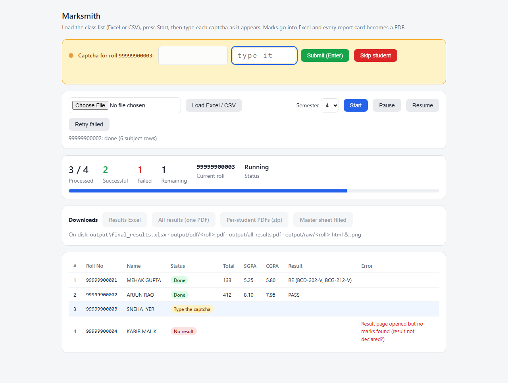

A class's results, one sheet, one run.
A teacher loads a list of roll numbers. Marksmith opens the university result portal for each student, reads the report card, and hands back a class marks register in Excel plus a PDF of every report card. It runs on your own computer, so student data never leaves it.

Roll No column.The captcha is the one manual step. The portal asks for one on every lookup, so you type it per student — roughly two minutes for a class of forty. Everything before and after it is automatic.
The class register: one row per student, a column block per subject with the subject name over its code and components.
One PDF per student, plus a single bookmarked PDF for the whole class in roll order.
Marks dropped into the matching subject columns of your own sheet. The original file is never changed.
A student whose result did not come through reads AB in every mark
cell, so no roll number is silently dropped.
Windows: download the folder and double-click run.bat. The first run sets
itself up, which takes a few minutes. You need Python 3.10 or newer installed first.
python -m venv .venv
.venv\Scripts\python -m pip install -r requirements.txt
.venv\Scripts\python -m playwright install chromium
.venv\Scripts\python app.pyThe dashboard opens at http://127.0.0.1:5001.
J.C. Bose University of Science and Technology, YMCA, Faridabad. More universities later — each one is a new portal to teach it.
Marksmith runs on the teacher's machine. Results, PDFs and your master sheet stay in a folder on that computer. Nothing is uploaded, there is no account, and there is no server holding marks.